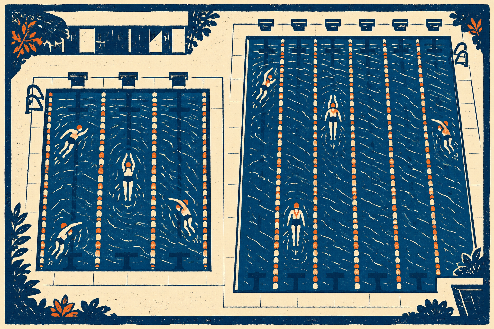
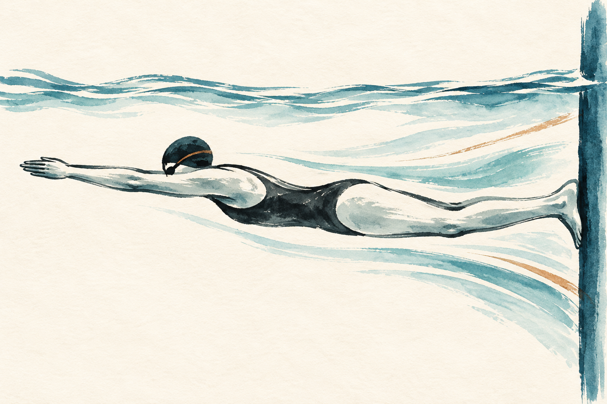
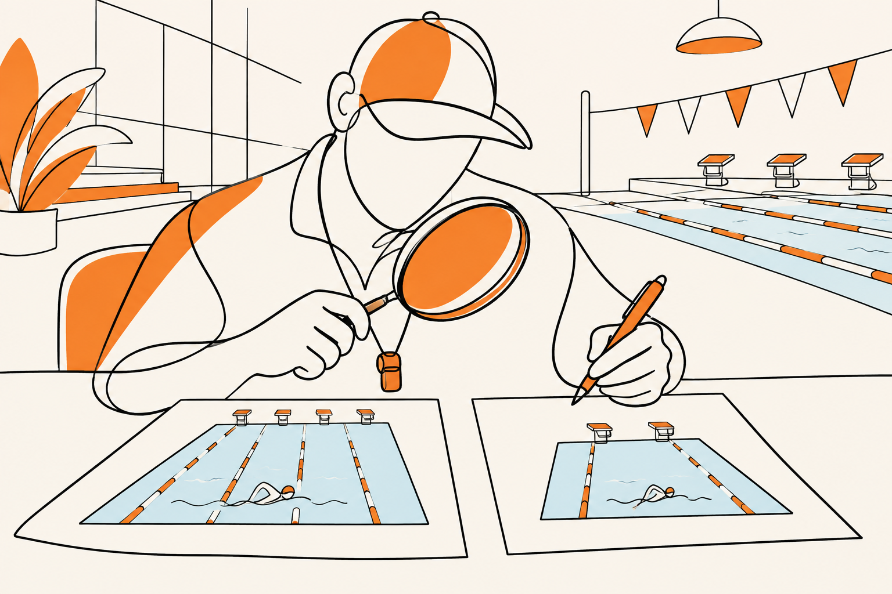
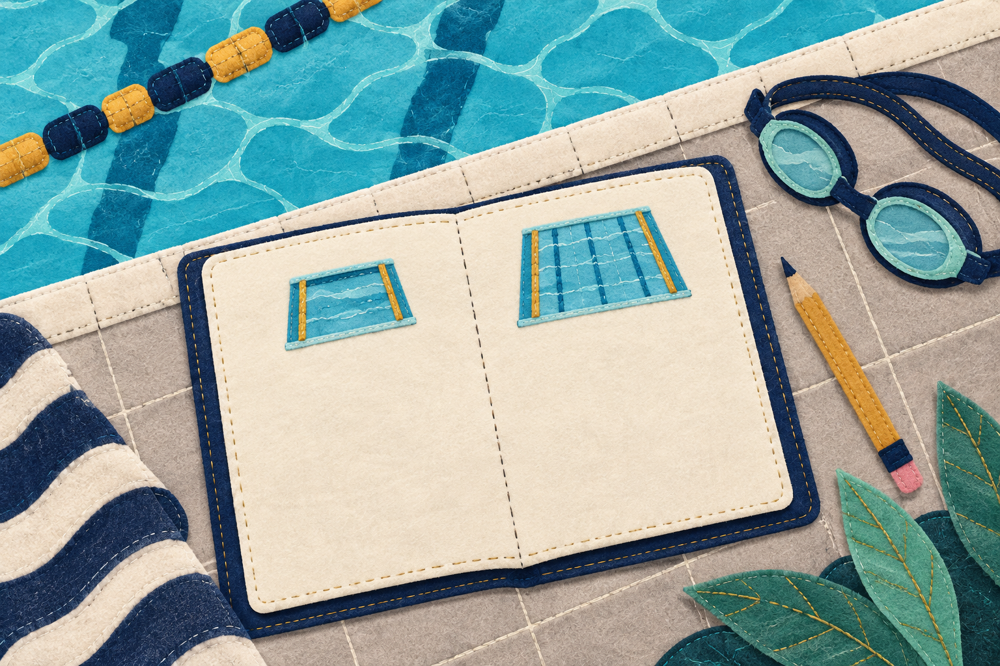

SWIMMING RESEARCH / 18
25mと50m。同じ100mなのに？
同じ100m、違う壁の回数
2026年11月4日 公開

いつもの25mプールでは余裕があったのに、50mプールで100mを泳ぐと長く感じる。時計を見ても、いつもより遅い。「今日は調子が悪いのかな」と考える前に、プールの長さを確かめてみましょう。
どちらも進む距離は100m。それでも、途中で壁に着く回数が違います。壁で向きを変え、足で蹴って進む部分と、腕や脚を動かして泳ぎ続ける部分の組合せが変わるのです。
25mプールで泳いだ100mの記録と、50mプールで泳いだ100mの記録は、別々に残してよい。 この記事では、長さが変わると泳ぎの何が変わるかを、壁の回数から考えます。速い・遅いだけで自分の泳ぎを評価する前に、比べる相手をそろえましょう。
1｜100mの中に、折り返しは何回ある？
25mのプールで100mを泳ぐには、端から端へ4回進みます。25＋25＋25＋25＝100mです。壁に着いて折り返すのは、25m、50m、75mの3回。最後の100mはゴールなので、折り返しには数えません。
50mのプールなら、端から端へ2回で100mです。50＋50＝100m。折り返すのは途中の50mで1回だけ。スタート時の壁蹴りも、途中の折り返しとは分けて数えます。同じ100mでも、25mでは3回、50mでは1回、途中の壁を使います。壁からスタートするなら最初の蹴り出しが両方に1回加わりますが、途中の折り返しは3回と1回のままです。
100mを、どう進む？

行く、戻る。最後はゴール
それぞれ一つのプールを進む順を、上から並べています。
25m × 4本 ＝ 100m
途中の折返し：3回
50m × 2本 ＝ 100m
途中の折返し：1回
壁からスタートすると、最初の蹴り出しが別に1回。途中の折返しには数えません。
片道4本で100m。途中の折り返し3回。
片道2本で100m。途中の折り返し1回。
ゴールまでは同じ100m。壁を使う回数で、泳ぎの中身が変わる。
「4往復」と言うと距離が変わるので気をつけます。往復は行って戻ること。25mプールで1往復すると50mです。この記事の4回とは、片道を4本進むこと。図も一本の矢印が片道一つに対応し、行き帰りで向きが変わります。
水泳の記録でいう「短水路」は端から端まで25mのプール、「長水路」は端から端まで50mのプールのことです。泳ぐ距離が短い種目・長い種目という意味ではありません。短水路の400mも、長水路の400mもあります。
ここでまず分かるのは、壁の回数の違いです。3回だから必ず何秒速い、とまでは決まりません。向きを変えるのにかかる時間も、壁を蹴った後にどう進めるかも、人によって違うからです。
2｜壁を蹴って進む部分、泳ぎ続ける部分
ふだんのクロールでは、腕や脚を動かして水に働きかけます。一方、壁では足をついて蹴ることができます。壁を蹴った直後は、その勢いを使って進み、やがていつもの泳ぎへ戻ります。100mのタイムには、この違う動きが一緒に入っています。壁で止まって休む時間を増やす話ではありません。
歩いていて、途中に向きを変える場所がある場面を想像すると、同じ長さでも道順が違うことはつかめます。ただ、水泳の壁蹴りには足で壁を押して進む働きがあるので、曲がり角で歩く例だけでは速さの違いまで説明できません。大事なのは、同じ距離の中身が違うということです。
壁を蹴る動きも、100mの一部

足で壁を押し、その勢いで進む部分。
壁を使わず動き続ける部分。
競技者の記録を調べた2013年の研究では、50mや100m、1500mなど、距離が違う自由形の種目について、25mと50mのプールを比較しました。2000〜2012年のスイス国内のランキングと世界選手権決勝の記録を扱い、まとめた泳速度は25mプールのほうが高い結果でした。Wolfrumら、2013
これは、プールの長さを分けて記録を見る意味がある、という手がかりです。ただし、同じ人が同じ日に泳いで壁だけを増減させた実験ではありません。集めた大会記録の比較なので、差をすべて壁の働きだけで説明できたとは言えません。初心者のタイムを自動で換算する表にもなりません。
壁を上手に使える人なら、折り返しが多いことが速さにつながりえます。一方、壁に近づくと急に止まる、向きを変えるのに時間がかかる、蹴った後に姿勢が崩れる場合は、同じような利点になるとは限りません。「25mなら誰でも必ず速い」という約束はできないのです。
50mプールで長く感じても、それだけで体力が下がった証拠にはなりません。壁まで続けて泳ぐ区間が長くなり、呼吸や腕のリズムの保ち方が変わっている可能性もあります。逆に、25mで速いから50mでも同じ感覚が続くとも限りません。
3｜「何秒足せば同じ？」は簡単に決まらない
では、25mプールのタイムに決まった秒数を足せば、50mプールでの実力が分かるのでしょうか。こうして、25mプールで泳いだ100mのタイムから、50mプールでの100mの目安へ直すことを「換算」と呼びます。目安が欲しくなる場面ですが、一つの足し算を全員に当てはめるのは難しい問いです。
2023年の研究は、スペインの年代別の泳者について、シーズン中の自由形のベストタイムを25mと50mで比べました。二つのシーズンの各自由形種目で、国内上位100人の記録を分析しています。プール間のタイム差は、年齢層によって同じではありませんでした。Hermosillaら、2023
タイムはプールの長さとセット

同じ長さのプールの過去記録と比べる。
こちらも別の基準として残す。
この結果からも、「誰でも同じ差」と決める前に、誰の、どの種目の記録かを確かめる必要があります。年齢層で差が違った理由までは、この記録の比較だけでは分かりません。目の前の子どもの差の原因を、壁蹴りの得意・不得意だと決めることもできません。
大会の換算表や参加基準があるときは、その大会が指定する方法を使います。それは申込みなどに使う約束で、本人が別のプールで実際に出したタイムとは区別します。本記事では、確認していない大会規則や独自の換算式は載せません。
練習の振り返りなら、まず「25mプールの自分」と「50mプールの自分」を分ける方法があります。昨日の25mと今日の50mを一つのランキングに並べるより、前に同じ長さのプールで泳いだときと比べます。泳法、距離、スタートの方法、全力か余裕のある泳ぎか、休み方もそろうほど、違いを考えやすくなります。
すぐに比べられる過去の記録がなければ、その日の一本を最初の基準にすれば十分です。「前より遅い」と決める必要はありません。新しい条件での出発点ができた、と扱えます。
4｜次の練習は、壁の前後を一つ見る
次回は、いつもの無理のない距離で、壁に近づくところか、壁を離れたところのどちらか一つに目を向けてみます。これは本記事の観察案です。大会のターンを研究どおりに再現する手順ではありません。施設と指導者のルールを守り、混雑しているときに立ち止まって観察しません。
たとえば、泳ぎに慣れた人なら、壁の直前だけ腕が止まって待っていないかを、指導者に見てもらう。別の機会には、壁を蹴った後、いつ腕を動かし始めているかを確かめる。ここで「見る」は、泳ぎながら壁を見つめる指示ではありません。指導者には動きを観察してもらい、自分は泳ぎ終えてから振り返ります。今回は壁へ近づくところを確かめる、と決めたら、同時に蹴る強さや水中の距離まで大きく変えないようにします。
壁の前か、後か、一つ選ぶ

- 1指導者が動きを見る
壁の直前に腕が止まっていないか等。
- 2自分は泳いだ後に振り返る
泳ぎながら壁を見つめる指示ではない。
- 3条件を添えて記録する
プール長・泳いだ距離・開始方法・強度。
壁で止まるのが目立ったら、強く蹴る練習を足す前に、安全に壁へ着く位置やタイミングを相談できます。壁を離れた後にバランスが崩れるなら、長く潜ろうとせず、余裕のある蹴り出しから姿勢を確かめます。初心者が一人で回転ターンや息止めの延長を試すための記事ではありません。
記録には、「25mプール・100m・壁から開始・余裕のある速さ」のように条件を添えます。タイムがなくても「折り返しは3回」「壁の前で一度待った」のような短い言葉で構いません。観察した場所と、そこでした動作が結びつけば、次に何を聞けばよいかが具体的になります。
50mプールで壁まで続けるのが難しい日は、いつもの25mのタイムを追いかけず、指導者と距離や休み方を調整します。慣れない長さを無理に泳ぎ切ることが、比較のための条件ではありません。壁の観察だけで50mプールに必ず慣れる、という処方でもありません。
最後に、25mプールで100mを泳ぐとき、折り返しは4回でしょうか。答えは3回です。4本目の終わりはゴールだからです。距離が同じでも、壁の回数が違う。 時計の数字の横にこの違いを置くと、次の一本で何を確かめたいかが見えてきます。
まとめ｜タイムは、プールの長さと一緒に読む
研究の目的は？ 2013年の論文は、競技者の自由形の記録が25mと50mのプールでどう違うかを調べました。2023年の論文は、スペインの年代別泳者について、その差が年齢層でどう違うかを調べました。
何を比べた？ 前者は2000〜2012年のスイス国内ランキングと世界選手権決勝の記録。後者は二つのシーズンの各自由形種目で、国内上位100人のシーズンベストを分析しました。特定の人にターン練習をさせ、その効果を試した実験ではありません。
何が分かった？ 2013年の集計では25mプールのほうが泳速度は高く、2023年ではプール間のタイム差が年齢層で同じではありませんでした。別に距離から数えられる事実として、100mの途中の折り返しは25mプールで3回、50mプールで1回です。論文は、この2回の差だけで全員のタイム差を説明したわけではありません。
この記事で伝えたい結論。 同じ100mでも、プールが違えば壁を使う回数が違います。25mと50mのタイムだけを並べて「上達した・遅くなった」と判断しないでください。この2本から、あなた専用の換算秒数は決まりません。
では、どうすればよい？【記事からの提案】 次からはタイムに「プールの長さ・泳いだ距離・開始方法・強度」を添え、まず同じ条件の過去記録と比べます。次の練習で動きを見直すなら、壁の直前か直後のどちらか一つを指導者に見てもらいましょう。泳ぎながら壁を見つめたり、潜る距離を延ばしたりする必要はありません。
参考文献と確認範囲
- Wolfrum Mほか（2013）The effects of course length on freestyle swimming speed in elite female and male swimmers – a comparison of swimmers at national and international level. SpringerPlus 2, 643. 原著
- Hermosilla Fほか（2023）Differences in seasonal best times between short and long course in freestyle events in Spanish age-group swimmers. Journal of Sports Sciences 41(6), 557–564. 発行元抄録
研究説明は原著の抄録と、2013年論文の公開ページで確認できた研究概要に基づきます。未確認の個別データは補っていません。折り返し回数は100mという条件から数えたもので、研究参加者の測定値ではありません。図はプール・区間・観察場所を示す説明用の模式図です。全員に共通の換算値や、特定のターンで速くなる秒数は示していません。